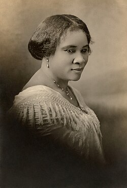

Madam C. J. Walker (23/12/1867 - 25/05/1919) Madam C. J. Walker, emprendedora estadounidense Emprendedora estadounidense –¡La perseverancia es mi lema!– La primera mujer millonaria en los Estados Unidos. Padres: Owen Breedlove y Minerva Anderson Cónyuges: Moisés McWilliams (m. 1882-f. 1887), John Davis (m. 1894-div. 1903), Charles Walker (m. 1906-div. 1913) Hijos: A'Lelia McWilliams Nombre: Sarah Breedlove Conocida por: Fundadora de Madam C. J. Walker Manufacturing Company

Sarah Breedlove nació el 23 de diciembre de 1867 en Delta, Luisiana. Fue una de seis hijos; tuvo una hermana llamada Louvenia y cuatro hermanos: Alexander, James, Solomon, y Owen Jr. Sarah, sus padres y hermanos mayores fueron esclavos en la plantación Madison Parish de Robert W. Burney. Ella fue la primera hija en su familia en nacer en libertad luego de la Proclamación de Emancipación. Su madre murió en 1872, posiblemente de cólera. Su padre se volvió a casar y falleció. Quedó huérfana a los siete años. Sarah se trasladó a Vicksburg, Mississippi, a la edad de 10 años, donde vivió con Louvenia y su cuñado, Jesse Powell. Comenzó a trabajar de niña como empleada doméstica.[5] "Tuve pocas o ninguna oportunidad cuando empecé en la vida, ya que quedé huérfana y estuve sin madre ni padre desde que tenía siete años", contaba a menudo. También contaba que sólo había recibido tres meses de educación formal, que aprendió durante las clases de alfabetización de la escuela dominical de la iglesia a la que asistía durante sus primeros años